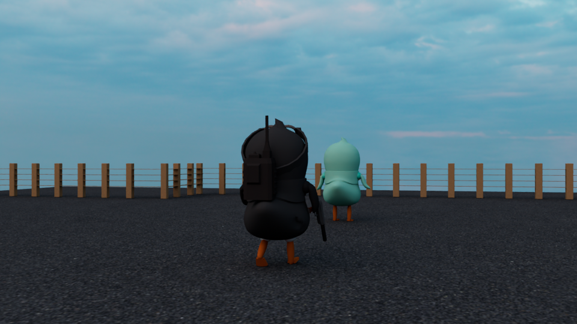
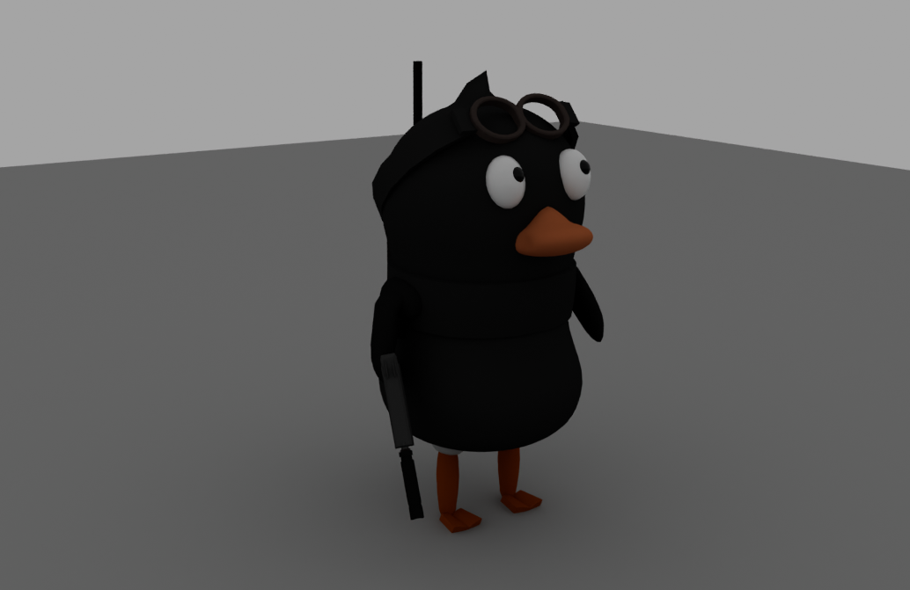
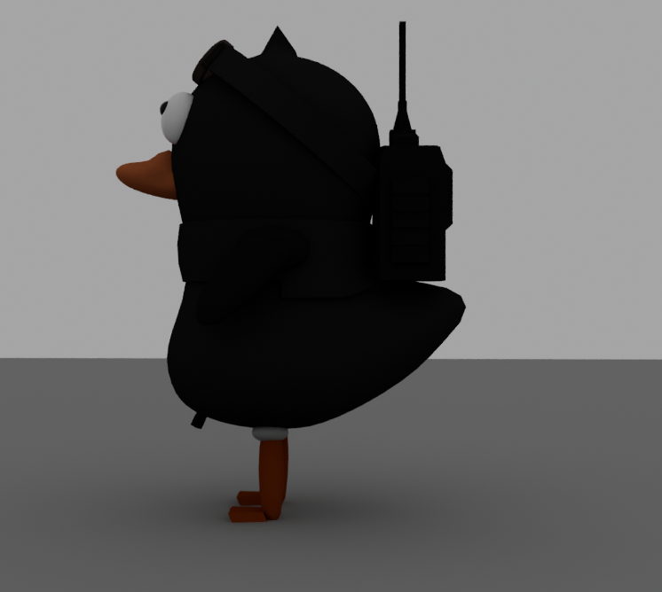
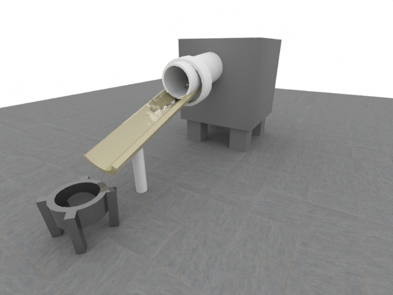
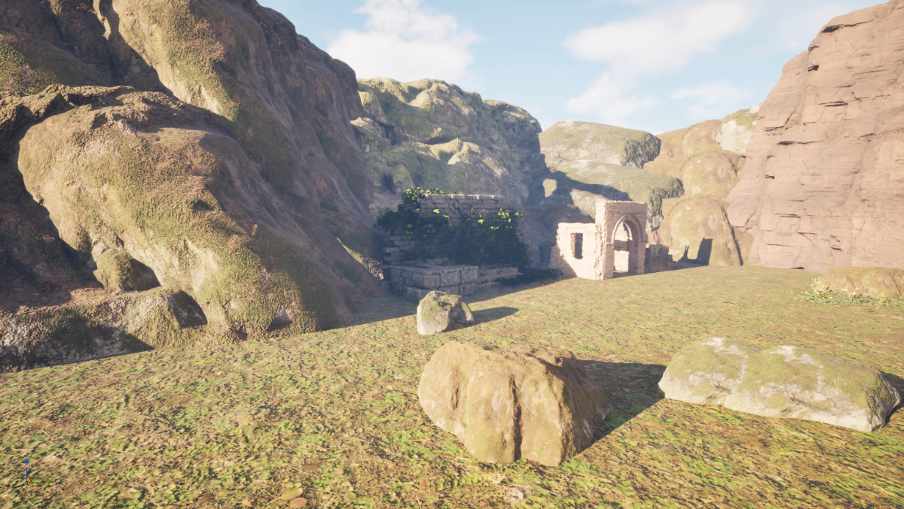
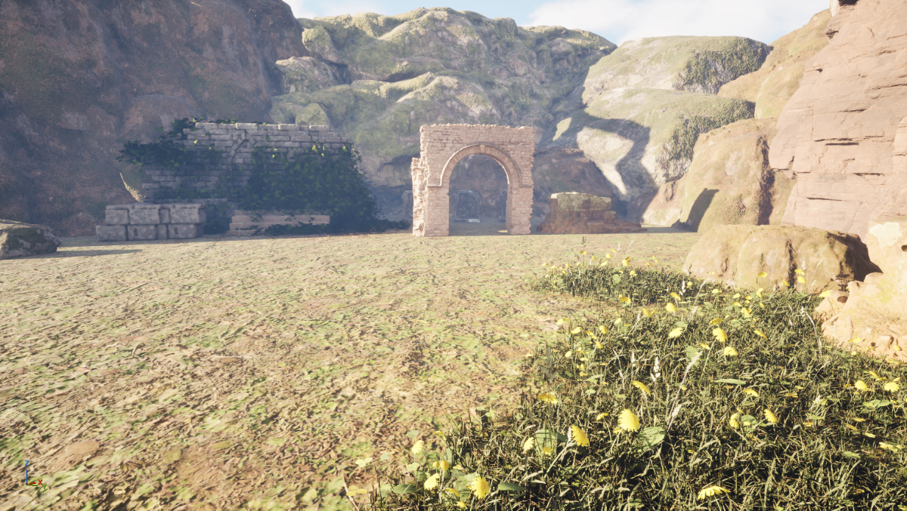

鳥型ハンター
シルエットと小物の組み合わせで個性を表現したオリジナルキャラクター。
ゴーグルや装備、くちばし・足の色のコントラストを意識し、遠目でも特徴が伝わる形を目指しました。複数の角度から形状を確認し、キャラクターとしてのまとまりを調整しています。
個人制作｜制作期間：3週間強（アニメーション含む）
3D CG · REALTIME · SIMULATION
3D CGを通して、見た人の記憶に残るキャラクターや空間をつくる。
作品を見るSELECTED PROJECTS
モデリング、シミュレーション、環境制作。
制作で考えたことと、試行錯誤の過程を紹介します。



シルエットと小物の組み合わせで個性を表現したオリジナルキャラクター。
ゴーグルや装備、くちばし・足の色のコントラストを意識し、遠目でも特徴が伝わる形を目指しました。複数の角度から形状を確認し、キャラクターとしてのまとまりを調整しています。
個人制作｜制作期間：3週間強（アニメーション含む）

nParticleを用いて、装置を流れる水の動きを制作。
水が斜面を通って容器へ流れ込む状況を設定し、粒子の動きや流れの見え方を確認しながら調整しました。シミュレーションの設定と結果を見比べ、現象が伝わる表現を目指しました。
個人制作｜制作期間：2週間


岩場と石造りの遺跡を組み合わせた、夕暮れの環境制作。
アーチ状の門や岩肌、地面の植生を配置し、奥行きのある空間を構成しました。ライティングと明暗のバランスを調整し、遺跡の存在感と時間帯の雰囲気が伝わる画づくりを意識しています。
個人制作｜制作期間：2週間
A LITTLE ABOUT ME
試して、観察して、
より良い表現へ。
3D CG制作では、形や空間をつくるだけでなく、作品全体の完成度や見る人に与える印象を大切にしています。モデリングでは細部まで観察し、形状や質感を丁寧に作り込むことを意識しています。個人制作を通して、モデリングからシミュレーション、アニメーション、ライティングまで幅広い表現に取り組み、試行錯誤を重ねながら作品の完成度を高めています。
LET'S CONNECT
ご覧いただきありがとうございます。
連絡先を掲載する場合は、ここに就活用メールアドレスなどを追加してください。